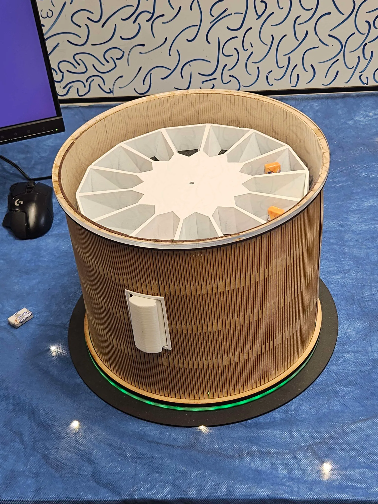
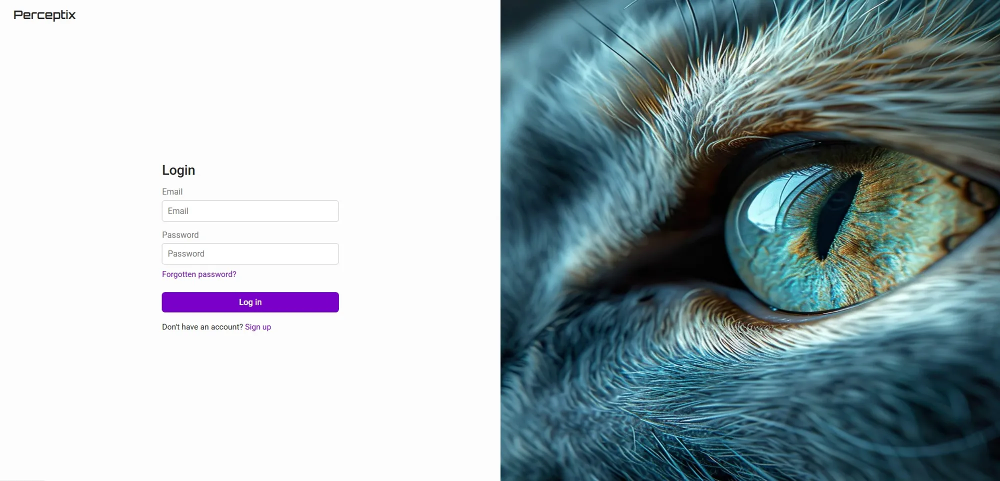
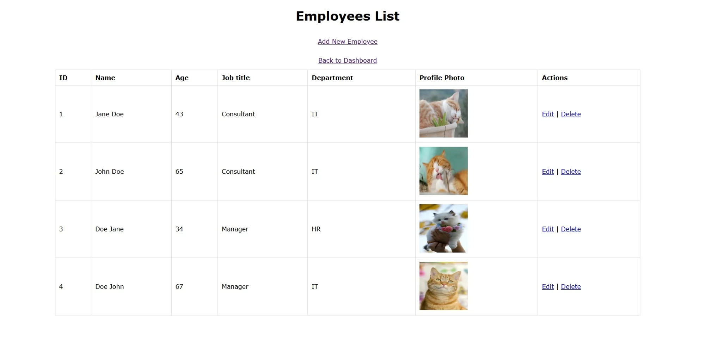

Pill Dispenser
A custom built machine that dispenses pills at set intervals using a stepper motor and Python controlled movement.
View projectWho am I?
Hi, I'm Adrian. I just finished my education at NTNU studying a bachelor's degree in Web Development. I've had a fascination for physical hardware and the software that runs on it ever since my first computer, which led to my degree. In my time at NTNU I've learned about databases, security, code languages, and built electronic devices from scratch, which I'd like to showcase below.
What have I worked on?
Here are some of the projects I've worked on during my time at NTNU.

A custom built machine that dispenses pills at set intervals using a stepper motor and Python controlled movement.
View project
An online platform designed to test whether users can distinguish AI generated media from human made content.

A PHP and MySQL employee management system built to practice authentication, CRUD operations, and database design.